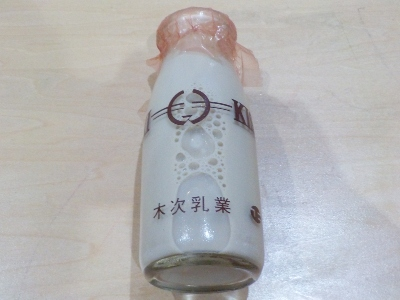
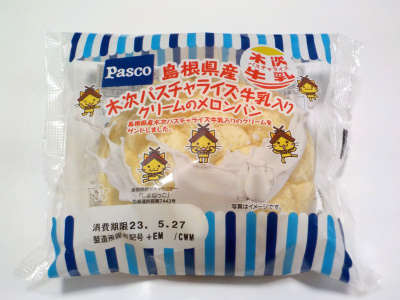
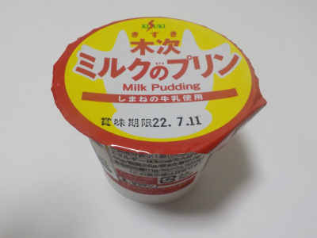
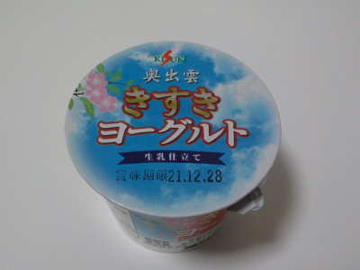

温泉上がりの木次乳業のミルクコーヒーはとっても美味しい。
更新日 : 2026/06/27

出雲市の「しっとりつるつる北山温泉」で購入した瓶入りのミルクコーヒーです。出雲市だけど出雲市の牛乳使わないで、雲南市の牛乳を使うのは何か理由があるんでしょうね。
私は温泉では給水機の水を何度か飲むので、のどは乾いてないですが湯上りの休憩でミルクコーヒーを飲みました。
長湯で少し疲れているので、マイルドで甘いミルクコーヒーがめちゃくちゃ美味しかったです。
ひんやりスイーツを飲んでる感じで、とっても癒されました。
島根県産木次パスチャライズ牛乳入りクリームのメロンパン。
更新日 : 2023/05/27

パッケージがとっても可愛いメロンパンです。
クッキー生地が甘くて美味しいです。パンの中にはちょっと濃い感じのクリームがちょっと入ってて、さらに甘くなっていました。
砂糖甘い感じのメロンパンは美味しいですね。
木次乳業のミルクのプリンは思ったより軽かったです。
更新日 : 2022/07/10

牛乳に砂糖とゼラチンを加えて作った感じのプリンです。
子供の頃に牛乳に砂糖を入れて飲んだのを思い出しました。なんか懐かしい感じの商品だなー。
プリンなので牛乳の他に何かプラス要素があるのかと思ったんですが、シンプルに牛乳な感じでした。
木次乳業のヨーグルトはふんわりでした。
更新日 : 2021/12/28

奥出雲地方の牛乳で作った「きすきヨーグルト」です。
奥出雲ヨーグルトでいいじゃんって思うんですけど、どうなんでしょうね。
どっかが商標持ってって使えなかったりするのかな？
このヨーグルトは加糖タイプですが、甘過ぎないので酸味も感じれました。
水っぽくないんですが、柔らかい食感でした。全体的にふんわりしててマイルドなヨーグルトでした。